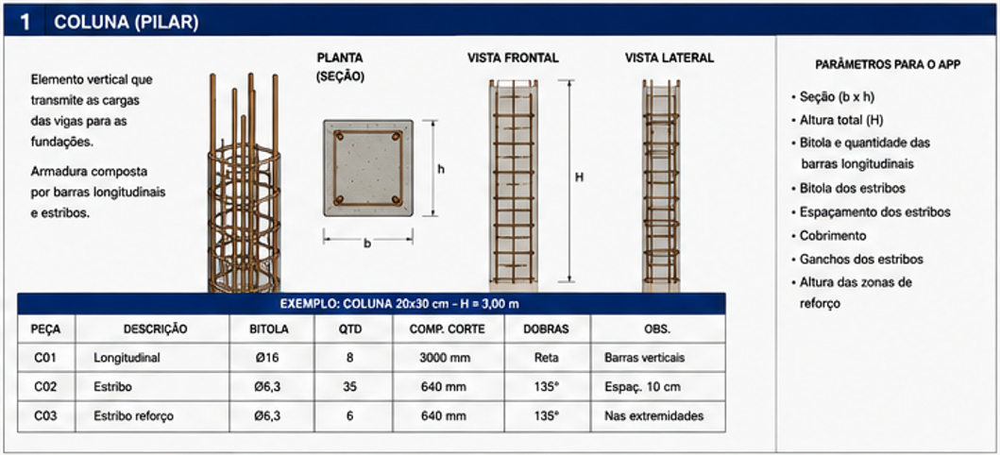
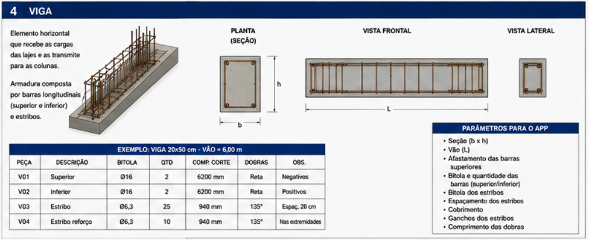
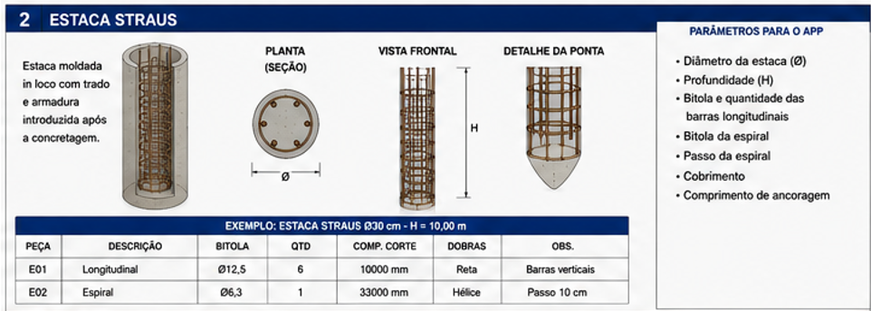
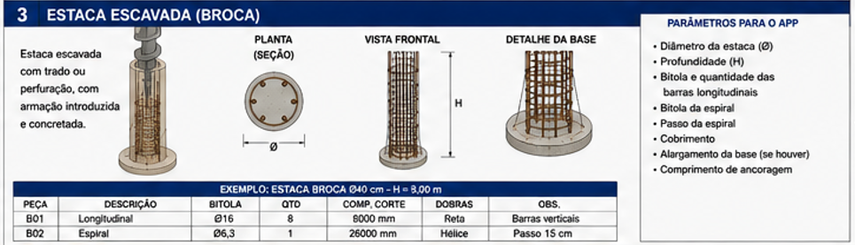
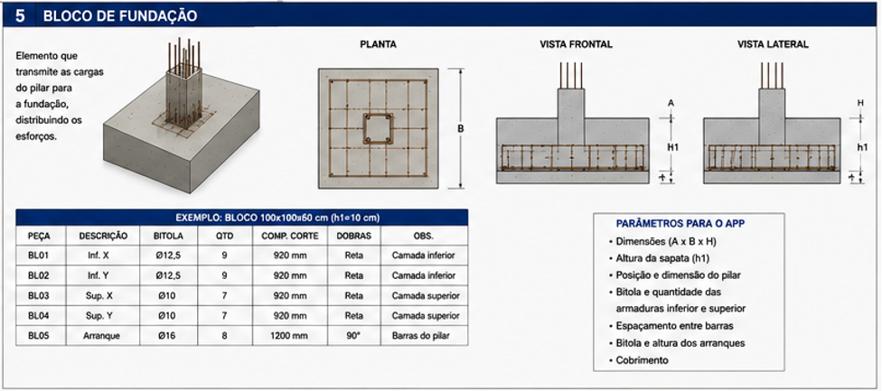
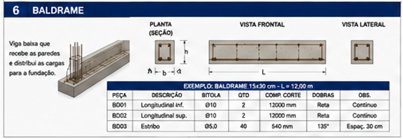
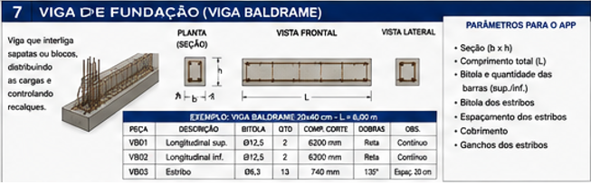
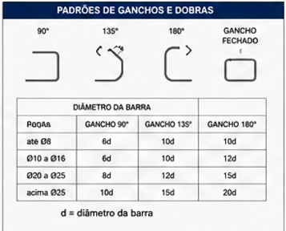

O que é uma coluna (pilar)?
É o elemento vertical que recebe a carga das vigas e leva até a fundação. A armadura é formada por barras verticais (longitudinais) e estribos.

Exemplo ilustrativo — coluna 20×30 cm, H = 3,00 m: longitudinal ø16,0 (8 un., 3,00 m cada) → 24 m (37,9 kg) · estribo ø6,3 (35 un., 0,64 m cada) → 22,4 m (5,5 kg) · estribo de reforço ø6,3 (6 un., 0,64 m cada) → 3,84 m (0,9 kg). Total ≈ 44,3 kg.
O que é uma viga?
É o elemento horizontal que recebe e distribui as cargas da estrutura, transmitindo-as até os pilares. A armadura é formada por barras longitudinais (superiores e inferiores) e estribos.

O que é uma estaca Straus?
É um tipo de fundação profunda, moldada dentro do próprio solo com o auxílio de um trado. A armadura é colocada depois da concretagem do poço.

Exemplo ilustrativo — estaca ø30 cm, H = 10,00 m: longitudinal ø12,5 (6 un., 10,00 m cada) → 60 m (57,9 kg) · espiral ø6,3 (33 m, passo 10 cm) → 8,1 kg. Total ≈ 65,9 kg.
O que é uma estaca escavada (broca)?
É outro tipo de fundação profunda: o solo é perfurado primeiro (com trado ou outro equipamento de perfuração), depois a armadura é introduzida e só então o poço é concretado. Às vezes tem um alargamento na base, pra distribuir melhor a carga no solo.

Exemplo ilustrativo — estaca ø40 cm, H = 8,00 m: longitudinal ø16,0 (8 un., 8,00 m cada) → 64 m (101,1 kg) · espiral ø6,3 (26 m, passo 15 cm) → 6,4 kg. Total ≈ 107,5 kg.
O que é um bloco de fundação?
É o elemento que recebe a carga do pilar e distribui esse esforço para as estacas, nos casos em que a fundação é em estaca em vez de sapata direta no solo.

Exemplo ilustrativo — bloco 100×100×60 cm (h1 = 10 cm): inferior X e Y ø12,5 (9+9 un., 0,92 m cada) → 16,56 m (16,0 kg) · superior X e Y ø10,0 (7+7 un., 0,92 m cada) → 12,88 m (7,9 kg) · arranque ø16,0 (8 un., 1,20 m cada) → 9,6 m (15,2 kg). Total ≈ 39,1 kg.
O que é um baldrame?
É uma viga baixa, rente ao solo, que recebe o peso das paredes (alvenaria) e distribui essa carga pra fundação.

Exemplo ilustrativo — baldrame 15×30 cm, L = 12,00 m: longitudinal superior e inferior ø10,0 (2+2 un., 12,00 m cada) → 48 m (29,6 kg) · estribo ø5,0 (40 un., 0,54 m cada) → 21,6 m (3,3 kg). Total ≈ 33,0 kg.
O que é uma viga de fundação?
É a viga que liga sapatas ou blocos de fundação entre si, ajudando a distribuir cargas e a controlar diferenças de recalque (afundamento) entre os apoios. Dependendo da região ou do escritório de projeto, o termo "viga baldrame" às vezes é usado tanto pra essa viga quanto pro baldrame — confira sempre a função indicada no seu projeto.

Exemplo ilustrativo — viga 20×40 cm, L = 6,00 m: longitudinal superior e inferior ø12,5 (2+2 un., 6,20 m cada) → 24,8 m (23,9 kg) · estribo ø6,3 (13 un., 0,74 m cada) → 9,62 m (2,4 kg). Total ≈ 26,3 kg.
Qual o comprimento padrão de gancho por bitola?
O comprimento do gancho varia com o ângulo da dobra (90°, 135° ou 180°) e com a bitola da barra, sempre como múltiplo do diâmetro (d) dela.

Dúvidas frequentes
Qual a diferença entre estaca Straus e estaca escavada (broca)?
Na Straus, a armadura entra depois da concretagem do poço. Na escavada (broca), o solo é perfurado primeiro, a armadura é colocada e só então o poço é concretado. Os dois são tipos de fundação profunda, moldados diretamente no solo.
Baldrame e viga de fundação são a mesma coisa?
Não necessariamente. O baldrame costuma receber a alvenaria direto em cima; a viga de fundação liga sapatas ou blocos entre si. Na prática, alguns projetos usam "viga baldrame" pras duas funções — o que vale é sempre conferir a função indicada no detalhamento do seu projeto.